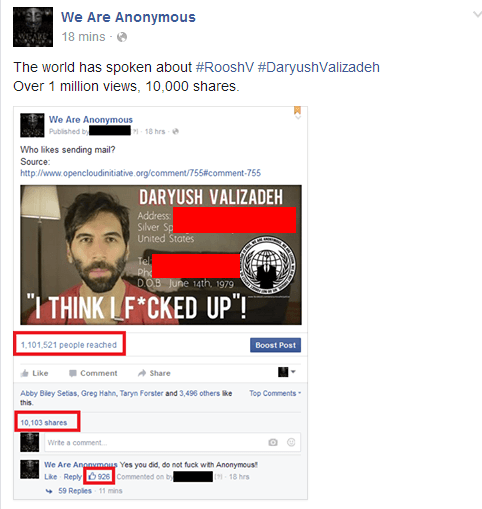

< < < Back
Official Timeline To The Worldwide Hysteria Over ROK’s International Meetup Day – Return Of Kings
With the dust settling and things returning to normal, it’s worth analyzing how the mass hysteria over International Meetup Day started. For more then a week, news outlets big and small brazenly smeared ROK, claiming we were organizing “pro-rape rallies,” with feminist protest groups, mayors, governors and more getting caught up in the mix. While Roosh had to officially cancel Meetup Day, the left suffered a massive loss as he humiliated journalists at a press conference and countless people woke up to the reality of the MSM’s lies.
With that in mind, here’s a timeline of how the whole kerfuffle began. You can also see Roosh’s Storify account here.
January 4

Roosh announces International Meetup Day in a post at ROK. The purpose of this day was to give ROK readers (as well as Roosh V Forum members and fans of Roosh’s own blog) “the opportunity to meet other like-minded men in their cities.” At the time of the announcement, only three tribes existed: one in Chicago (of which I am a member), one in Washington, D.C. (whom I’ve hung out with), and one in Poland. Our hope was to expand the tribal meetups to as many cities around the world as possible.
January 19
Roosh releases the complete list of cities that will be taking part in International Meetup Day: over 160 meetups in 43 countries.
January 31
https://twitter.com/rooshv/status/694029734406017024
The first media report on International Meetup Day, from the Sydney Morning Herald, is published, characterizing Return of Kings as an “anti-woman group… whose supporters believe rape should be legalised on private property.” While relatively mild, it served as an omen of the category five shitstorm to come. Additionally, leftists and feminists start posting warnings about ROK meetups in Boston, Vancouver, Glasgow and other cities on Reddit.
February 1
https://twitter.com/rooshv/status/694066875953733632
Australian feminists launch a petition on Change.org to shut down the ROK tribal meetup in Sydney, declaring it a “misogynistic form of terrorism.” In response, Roosh begins trolling Australians by claiming that he’s going to visit their country, prompting immigration minister Peter Dutton to hold an “urgent meeting” aimed at keeping him out. Return of Kings also starts trending on Twitter in Australia.
Media outlets in New Zealand, Britain, Canada and other countries begin denouncing the meetups and calling for Roosh to be banned. Snopes posts an article debunking the claim that Roosh is a “rape-supporter” and the meetups are “pro-rape rallies,” which does nothing to halt the hysteria.
February 2
https://twitter.com/rooshv/status/694297199216345088
The media amps up their attacks on ROK, with politicians such as Toronto Mayor John Tory and SNP MP David McDonald launching broadsides against Roosh. Traffic to ROK reaches record highs as a New Zealand anti-rape campaigner calls ROK’s meetups “a form of terrorism.” Roosh continues trolling both Australians as well as journalists who request interviews with him. American media outlets start reporting on the meetups.
February 3
Things take a turn for the serious, with feminists sending threats of doxxing and violence to men who attend ROK’s meetups. Counter-protests are announced in Chicago, New York City, Glasgow and numerous other cities. American media outlets amp up their attacks, with local TV stations and newspapers continuing the “pro-rape” smear, and police get involved in several cities. Return of Kings is denounced by Texas Governor Greg Abbott, and the U.K. Parliament even debates whether Roosh should be allowed in the country.
Roosh and ROK initially try to salvage International Meetup Day by both taking the meetups underground and announcing a counter-op to expose journalists who were lying about the meetups, but the sheer amount of heat is too much. Roosh is forced to cancel International Meetup Day in order to protect ROK readers from doxxing and harassment.
February 4

Despite the meetups being cancelled, feminists and media figures continue to hound Roosh and ROK. Anonymous doxes Roosh’s family, forcing him to hire a private security firm to protect himself.
February 5
https://twitter.com/rooshv/status/695687520626085890
Roosh announces he will be holding a press conference in Washington, D.C. so he can respond to journalists who have been libeling him.
February 6
https://twitter.com/rooshv/status/695981734467231744
International Meetup Day arrives. Despite the meetups officially being cancelled, feminists still hold poorly-attended counter-protests around the world. In Chicago, where we chose to hold our meetup after moving it to a different location, I embarrassed feminists by all but walking up to their protest and giving away my location: none of them confronted or followed me. In New York City, a male feminist protester was arrested after an ROK reader successfully trolled the demonstrators into going to the wrong spot.
Roosh also held his press conference, where he embarrassed journalists by showing that none of them read his writings and by pointing out that none of them were aware of the Muslim refugee rape attacks that occurred in Germany during New Years’ Eve.
In response, Caitlin Dewey, Matt Ramos and the other journalists whom Roosh humiliated tried to assuage their butthurt with salty write-ups in their respective publications, where they focused on Roosh being a Trump supporter rather than the fact that he exposed their lies and snake-like tactics to the entire world.
February 7
https://twitter.com/KittenHoliday/status/696168304050905088
The manufactured outrage finally began to die down. Roosh was forced to depart the U.S. via New York City for a country where he can speak his mind without fear of persecution.
As you can see, the ease with which the media can whip up hysteria—and the brazenness with which they lie—is frightening. With no prompting whatsoever, the media colluded with feminists and politicians to prevent masculine men from holding innocuous happy hours, provoking violence and harassment against these men by smearing them as rapists and “rape-supporters.” While ROK was able to fight back against their smears and score a victory, it came at a high cost, and we’ll have to be on guard against the forces of leftism in the future.
Read More: Worldwide Effort To Shut Down International Meetup Day Is Under Way